Práctica: Administración de Usuarios y Grupos en Active Directory¶
Objetivos¶
Durante esta práctica aprenderás a crear, configurar y gestionar usuarios y grupos en Active Directory Domain Services. Esta práctica complementa la PR401 y te permitirá trabajar con la administración de objetos del directorio, configuraciones de cuentas y restricciones de acceso.
Al finalizar esta práctica serás capaz de:
- Crear y configurar cuentas de usuario en Active Directory.
- Configurar propiedades de contraseña y opciones de cuenta.
- Crear y gestionar grupos de seguridad con diferentes ámbitos.
- Añadir usuarios a grupos y gestionar pertenencias.
- Configurar restricciones de inicio de sesión (horarios y equipos permitidos).
- Deshabilitar y habilitar cuentas de usuario.
- Documentar el proceso completo de administración.
Tareas a realizar¶
- Creación de usuarios:
- Crea dos usuarios (
usuario1yusuario2) con la contraseñaAbc123!. - Configura las cuentas para que no tengan que cambiar la contraseña al iniciar sesión por primera vez.
- Creación y gestión de grupos:
- Crea un grupo global de seguridad llamado
Alumnos. - Añade ambos usuarios al grupo
Alumnos.
- Deshabilitación de cuentas:
- Deshabilita la cuenta de
usuario2. - Captura el error al intentar acceder desde un equipo cliente.
- Habilita de nuevo la cuenta.
- Restricciones de equipos:
- Configura
usuario1para que solo pueda iniciar sesión desde un equipo específico. - Verifica que no puede iniciar sesión desde otros equipos.
- Restricciones horarias:
- Configura
usuario2para que solo pueda iniciar sesión de lunes a viernes de 8:00 a 18:00. - Captura la configuración de horarios.
- Análisis de permisos:
- Intenta iniciar sesión en el controlador de dominio con
usuario2. - Analiza por qué no puedes y qué se necesitaría para permitirlo.
- Documentación:
- Crea un documento que explique:
- Los conceptos de usuarios y grupos en Active Directory.
- Los tipos y ámbitos de grupos.
- Los pasos realizados para la creación y configuración.
- Capturas de pantalla que demuestren el funcionamiento.
- Análisis de las restricciones y su funcionamiento.
Entregables¶
Para la entrega de esta práctica, deberás proporcionar:
- Documentación:
- Documento en Markdown con:
- Descripción de usuarios y grupos en Active Directory.
- Tipos y ámbitos de grupos.
- Pasos seguidos para la creación de usuarios y grupos.
- Configuración de restricciones de inicio de sesión.
- Capturas de pantalla del proceso completo.
- Análisis de las restricciones y su funcionamiento.
- Respuestas a las preguntas planteadas.
- Evidencias:
- Las capturas de pantalla deben mostrar:
- Creación de usuarios en Active Directory.
- Configuración de contraseñas y opciones de cuenta.
- Creación de grupos.
- Añadir usuarios a grupos.
- Deshabilitación de cuenta y error al intentar iniciar sesión.
- Configuración de restricciones de equipos.
- Configuración de restricciones horarias.
- Verificación de las restricciones funcionando.
Requisitos previos¶
Antes de comenzar, asegúrate de tener completada la PR401 o tener:
- Un dominio de Active Directory configurado y funcionando.
- Acceso RDP al controlador de dominio con credenciales de administrador.
- Al menos un equipo cliente unido al dominio.
- Conocimiento básico de Active Directory y conceptos de dominio.
Nota importante
Esta práctica asume que ya tienes un dominio de Active Directory configurado. Si no lo tienes, completa primero la PR401.
Introducción¶
¿Por qué administrar usuarios y grupos?¶
La administración eficiente de usuarios y grupos es fundamental en cualquier entorno de red empresarial. Permite:
- Controlar el acceso a recursos de red de forma centralizada.
- Simplificar la gestión de permisos mediante grupos en lugar de usuarios individuales.
- Aplicar políticas de seguridad de forma consistente.
- Facilitar la auditoría y el cumplimiento normativo.
Herramientas de administración¶
Para administrar usuarios y grupos en Active Directory utilizaremos principalmente:
- Usuarios y equipos de Active Directory (dsa.msc): Herramienta gráfica principal para la administración de objetos del directorio.
- PowerShell: Para tareas de administración automatizadas o masivas.
Recursos de apoyo
Paso 1: Crear usuarios del dominio¶
1. Acceder a Usuarios y Equipos de Active Directory¶
- Conecta mediante RDP a tu controlador de dominio.
- Abre "Administrador del servidor" (Server Manager).
- Haz clic en "Herramientas" → "Usuarios y equipos de Active Directory".
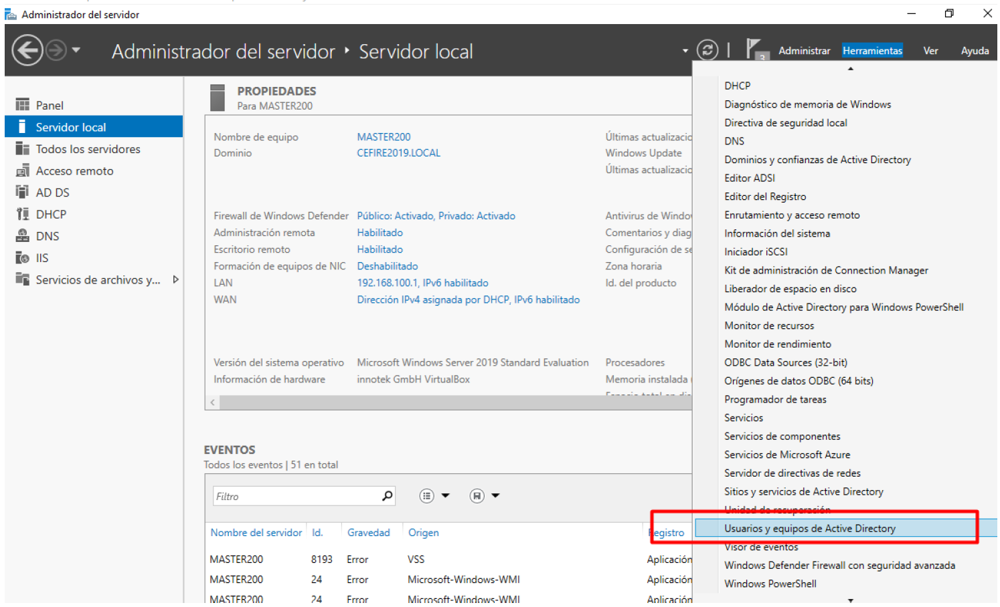
2. Crear el primer usuario¶
- En el panel izquierdo, expande tu dominio (ej:
empresa.local). - Haz clic con el botón derecho sobre "Users".
- Selecciona "Nuevo" → "Usuario".
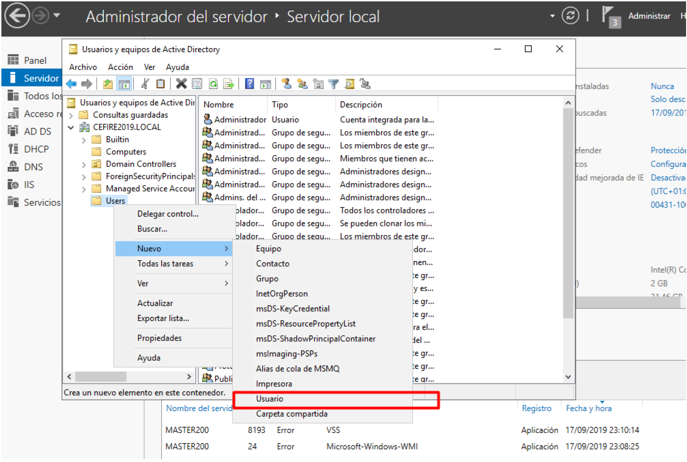
3. Configurar los datos del usuario¶
- En el asistente de creación de usuario, introduce:
- Nombre:
Usuario1- Iniciales: (opcional) - Apellidos: (opcional) - Nombre de inicio de sesión de usuario:usuario1
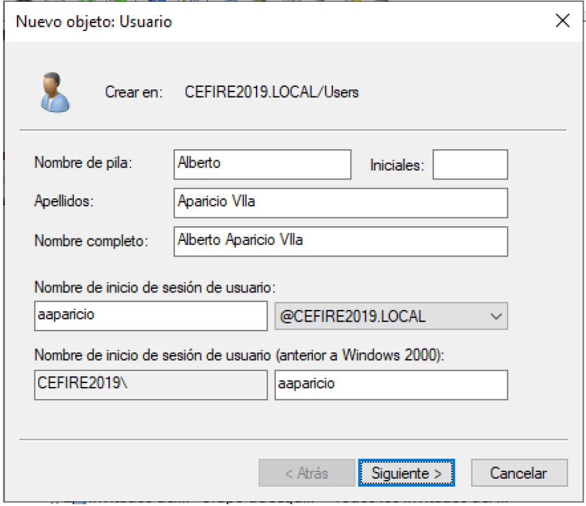
Normas para nombres de usuario
- Las cuentas de usuario deben ser únicas en todo el dominio.
- Los nombres pueden contener letras, números y algunos caracteres especiales.
- No se aceptan:
/,|,:,;,=,<,>,*. - Máximo 20 caracteres.
- Haz clic en "Siguiente".
4. Configurar la contraseña¶
- Introduce la contraseña:
Abc123! - Confirma la contraseña.
- Desmarca la opción "El usuario debe cambiar la contraseña en el siguiente inicio de sesión".
- Marca la opción "La contraseña nunca expira" (solo para prácticas).
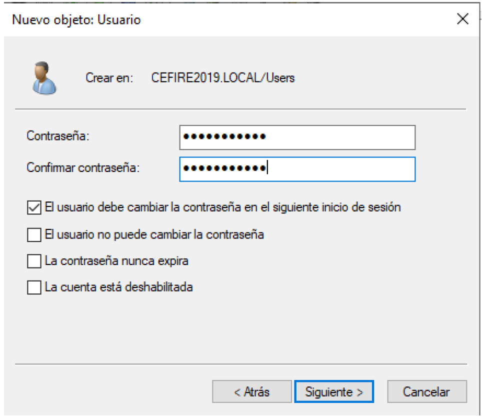
Seguridad en producción
En un entorno de producción, nunca deberías desactivar la caducidad de contraseñas ni permitir contraseñas débiles. Estas configuraciones son solo para prácticas educativas.
- Haz clic en "Siguiente" y luego en "Finalizar".
5. Crear el segundo usuario¶
Repite los pasos anteriores para crear un segundo usuario:
- Nombre de inicio de sesión:
usuario2 - Contraseña:
Abc123! - Mismas opciones de contraseña que usuario1
Paso 2: Crear y configurar grupos¶
1. Crear un grupo global¶
- En Usuarios y equipos de Active Directory, haz clic con el botón derecho sobre "Users".
- Selecciona "Nuevo" → "Grupo".
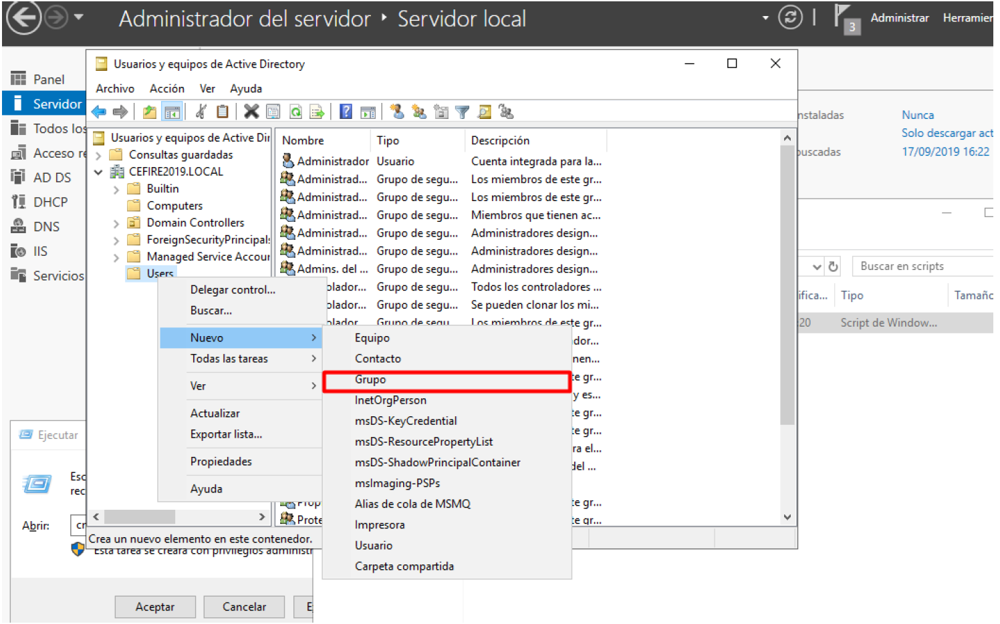
- En el cuadro de diálogo:
- Nombre del grupo:
Alumnos- Ámbito del grupo: Global (por defecto) - Tipo de grupo: Seguridad (por defecto)
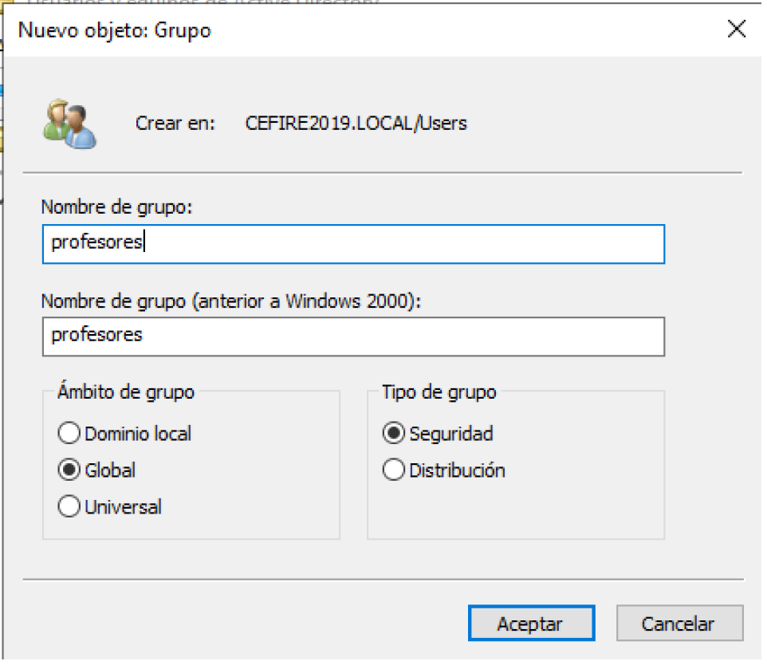
- Haz clic en "Aceptar".
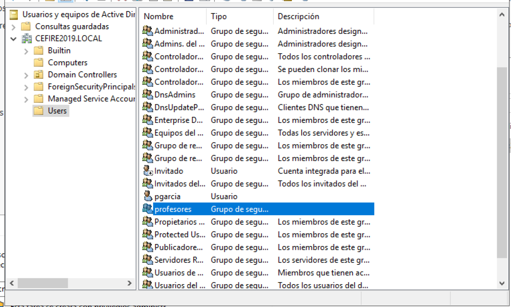
2. Añadir usuarios al grupo¶
Método 1: Desde el usuario¶
- Selecciona el usuario
usuario1. - Haz clic con el botón derecho → "Agregar a un grupo".
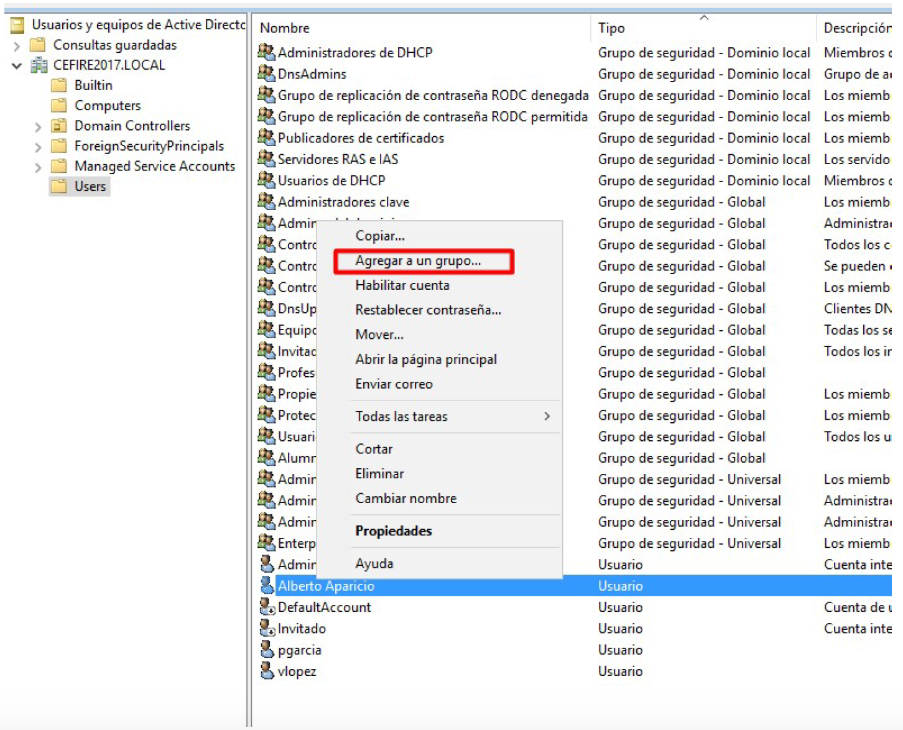
- Escribe el nombre del grupo:
Alumnos. - Haz clic en "Comprobar nombres" para verificar.
- Haz clic en "Aceptar".
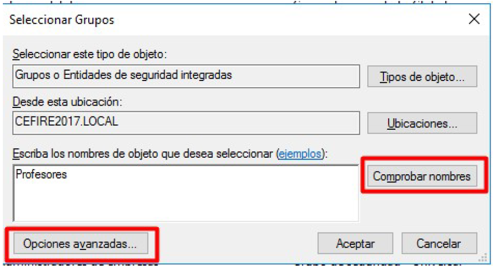
- Verás un mensaje de confirmación:
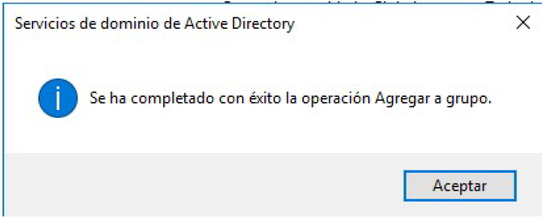
- Repite el proceso para añadir
usuario2al grupoAlumnos.
Método 2: Desde el grupo¶
- Selecciona el grupo
Alumnos. - Haz clic con el botón derecho → "Propiedades".
- Ve a la pestaña "Miembros".
- Haz clic en "Agregar".
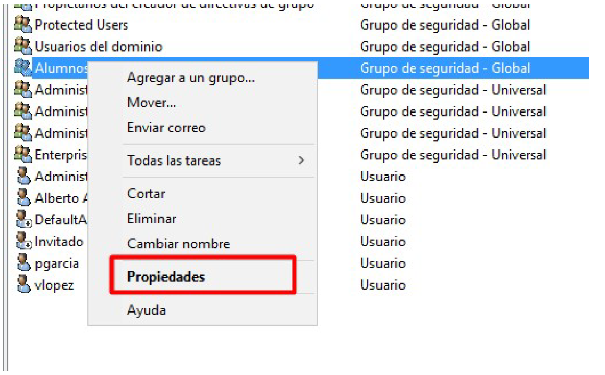
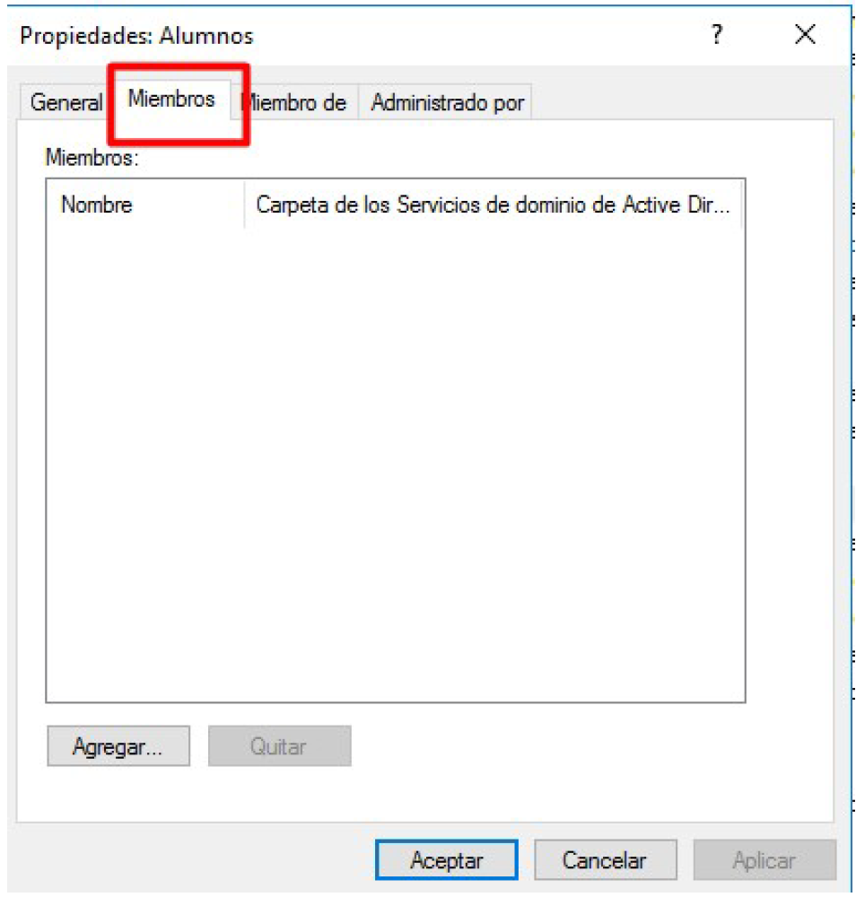
- Busca y añade los usuarios que desees.
- Haz clic en "Aceptar".
Paso 3: Deshabilitar y habilitar cuentas¶
1. Deshabilitar usuario2¶
- Selecciona el usuario
usuario2. - Haz clic con el botón derecho → "Deshabilitar la cuenta".
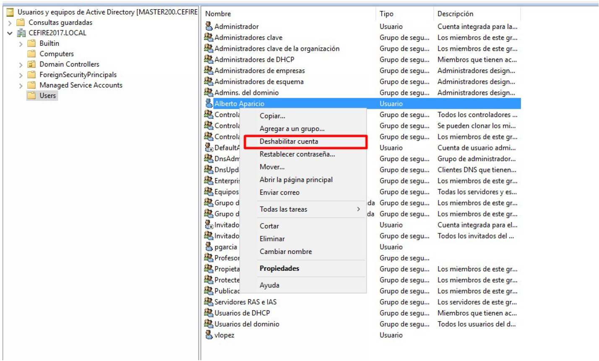
- Confirma la acción.
2. Verificar que la cuenta está deshabilitada¶
- Conecta mediante RDP al equipo cliente unido al dominio.
- Intenta iniciar sesión con
usuario2y su contraseña. - Deberías ver un mensaje de error indicando que la cuenta está deshabilitada.
Captura de pantalla requerida
Debes capturar el mensaje de error que aparece al intentar iniciar sesión con una cuenta deshabilitada.
3. Habilitar usuario2¶
- Vuelve al controlador de dominio.
- Selecciona el usuario
usuario2. - Haz clic con el botón derecho → "Habilitar la cuenta".
- Verifica que ahora puedes iniciar sesión con
usuario2.
Paso 4: Configurar restricciones de inicio de sesión¶
1. Restringir usuario1 a un equipo específico¶
- En Usuarios y equipos de Active Directory, selecciona el usuario
usuario1. - Haz clic con el botón derecho → "Propiedades".
- Ve a la pestaña "Cuenta".
- Haz clic en "Iniciar sesión en...".
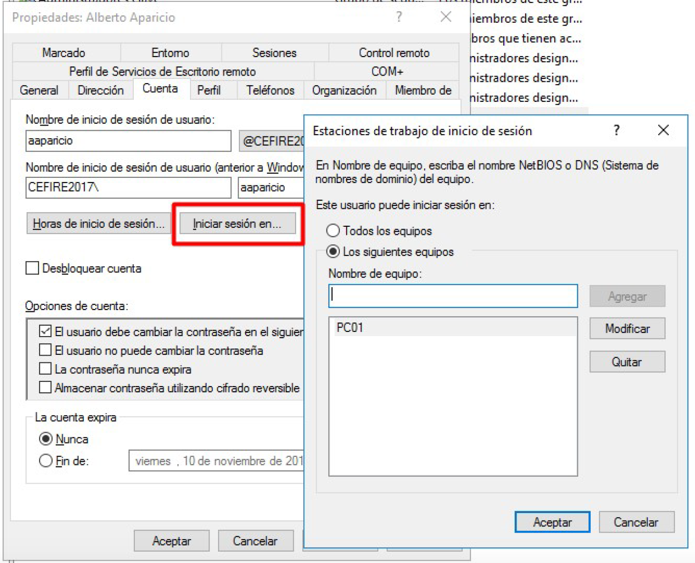
- Selecciona "Los siguientes equipos".
- Haz clic en "Agregar".
- Introduce el nombre del equipo (ej:
W10o el nombre de tu equipo cliente). - Haz clic en "Comprobar nombres" y luego en "Aceptar".
- Haz clic en "Aceptar" para cerrar todas las ventanas.
2. Verificar la restricción¶
- Si tienes otro equipo cliente unido al dominio, intenta iniciar sesión con
usuario1desde ese equipo. - Deberías ver un mensaje de error indicando que no puedes iniciar sesión desde ese equipo.
- Verifica que sí puedes iniciar sesión desde el equipo especificado.
Paso 5: Configurar horarios de inicio de sesión¶
1. Configurar horarios para usuario2¶
- Selecciona el usuario
usuario2. - Haz clic con el botón derecho → "Propiedades".
- Ve a la pestaña "Cuenta".
- Haz clic en "Horas de inicio de sesión".
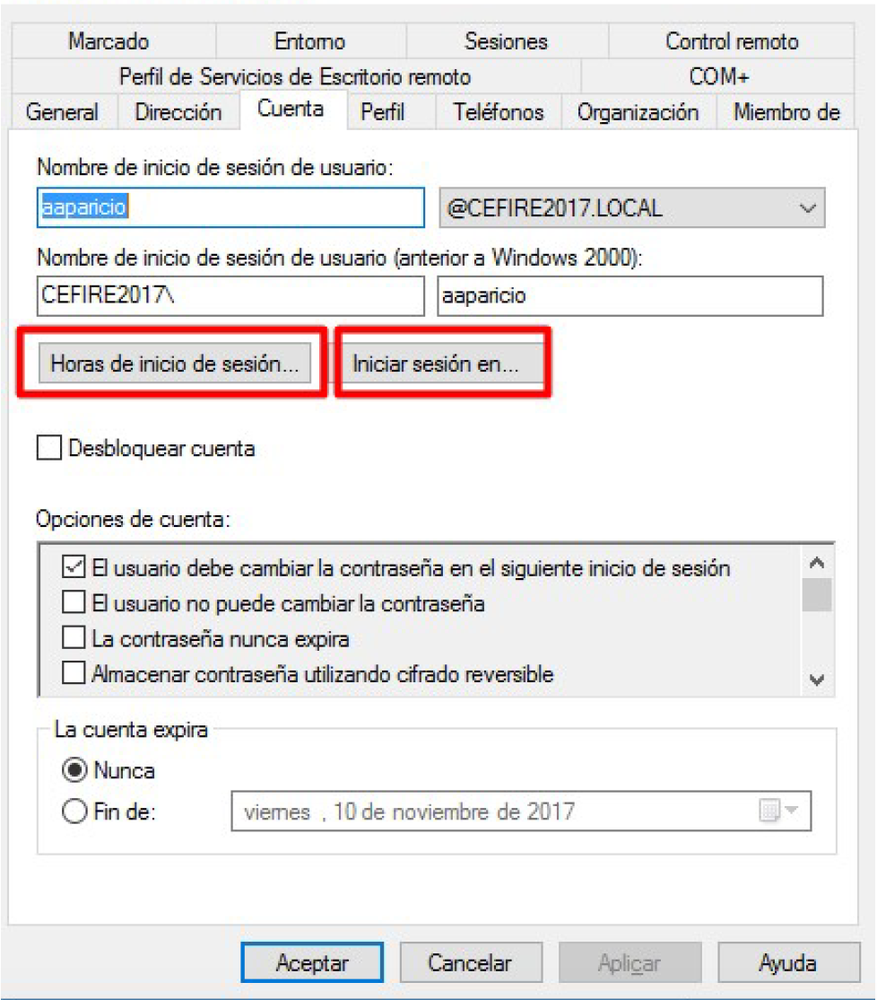
2. Configurar las restricciones horarias¶
- Por defecto, todas las horas están permitidas (aparecen en azul).
- Selecciona todas las horas de lunes a viernes fuera del horario de 8:00 a 18:00.
- También selecciona todo el fin de semana (sábado y domingo).
- Marca la opción "Inicio de sesión denegado".
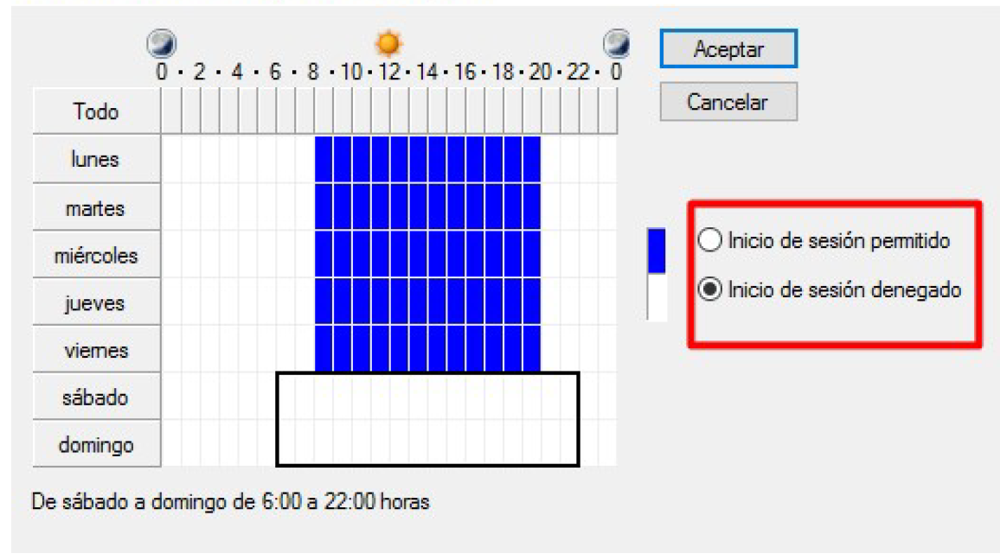
- Haz clic en "Aceptar" para guardar los cambios.
Captura de pantalla requerida
Debes capturar la pantalla de configuración de horarios mostrando las restricciones aplicadas.
3. Verificar las restricciones horarias¶
- Intenta iniciar sesión con
usuario2fuera del horario permitido (por ejemplo, después de las 18:00 o en fin de semana). - Deberías ver un mensaje de error indicando que no puedes iniciar sesión en ese momento.
Paso 6: Intentar iniciar sesión en el controlador de dominio¶
1. Intentar iniciar sesión con usuario2 en el DC¶
- Intenta iniciar sesión en el controlador de dominio con
usuario2. - Observa el resultado y el mensaje de error si aparece.
2. Análisis¶
Responde a las siguientes preguntas en tu documentación:
- ¿Por qué no puedes iniciar sesión en el controlador de dominio con
usuario2? - ¿Qué podrías hacer para que
usuario2pudiera iniciar sesión en el controlador de dominio?
Pista
Revisa los grupos predefinidos y sus permisos, especialmente los grupos relacionados con el controlador de dominio.